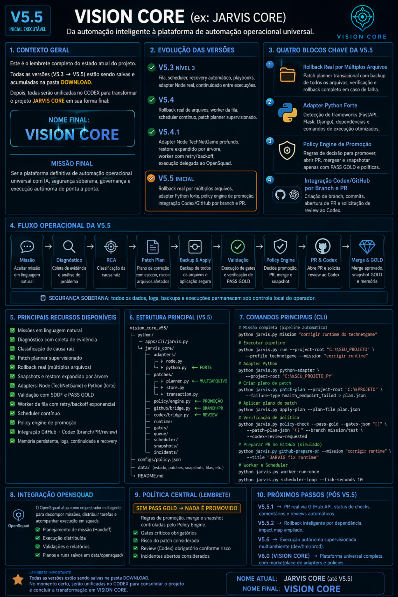
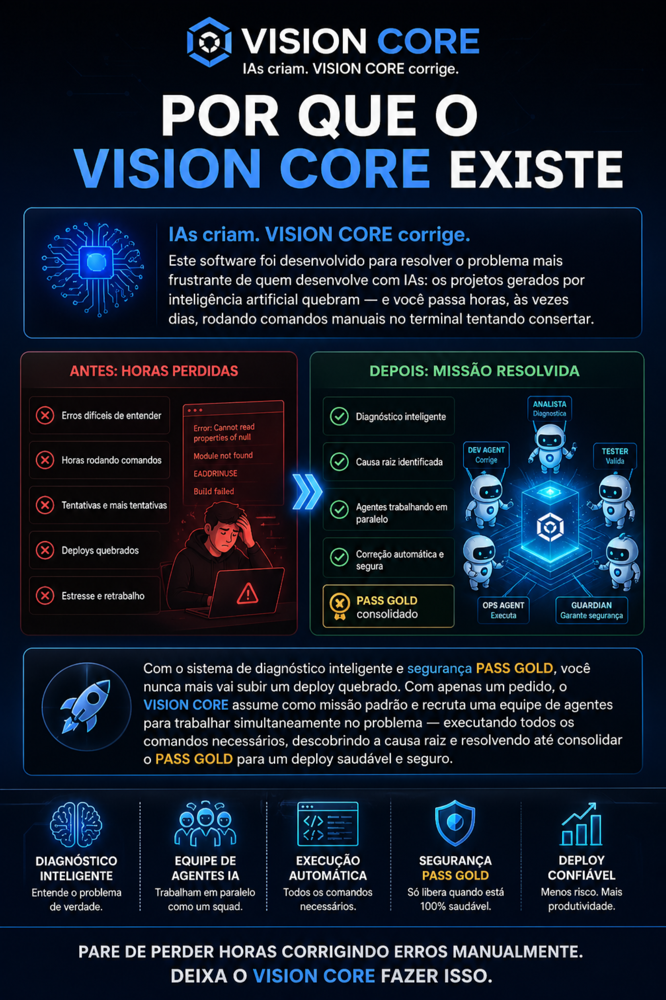
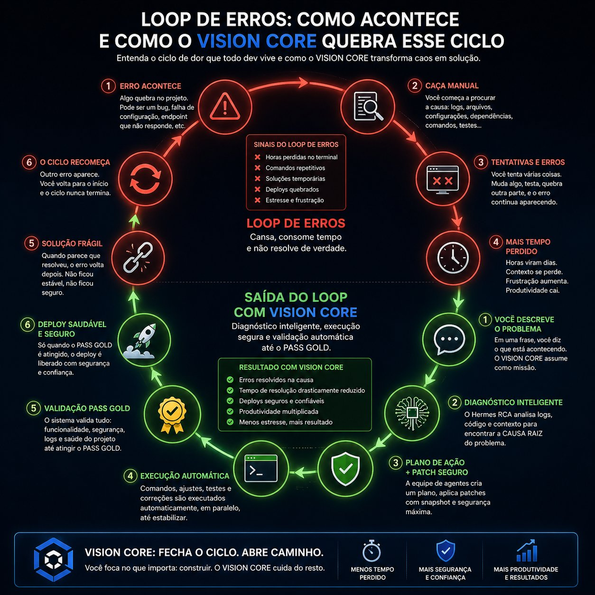

EXECUÇÃO • DIAGNÓSTICO • VALIDAÇÃO
Deploy sem medo de falhar.
Plataforma operacional de execução, diagnóstico e validação para desenvolvedores.
Projetos novos podem falhar no deploy ou pós-deploy. O VISION CORE foi desenhado para manter uma base GOLD ativa, validar alterações e acionar auto-rollback quando uma mudança não atinge o padrão esperado.
O erro pode acontecer. A falha visível, não.
Como funciona
Você define uma missão. O sistema interpreta o contexto, identifica a causa raiz com Hermes, planeja a correção e executa mudanças controladas. Nada é promovido sem validação.
Sem PASS GOLD, nada existe.
Segurança no deploy e pós-deploy
O deploy não encerra o risco. Algumas funcionalidades só podem ser analisadas online, sob carga real, com APIs externas, usuários reais e condições de rede reais.
Por isso, o VISION CORE mantém uma camada de runtime validation: observa funcionalidades recém-ativadas, detecta anomalias, compara comportamento esperado e reverte para o último estado GOLD se houver desvio crítico.
Validação antes do deploy. Proteção durante o deploy. Segurança contínua após o deploy.
Auto-rollback com estado GOLD
Cada alteração é tratada como uma transação: snapshot do estado atual, aplicação controlada, validação obrigatória e promoção somente após PASS GOLD.
Se falhar, o sistema descarta a alteração e volta automaticamente para o último estado estável, preservando continuidade operacional.
Refatoração assistida de código legado
Sistemas legados acumulam acoplamento, duplicidade, configurações esquecidas e decisões antigas. O VISION CORE auxilia a modernização com etapas menores, análise de impacto, validação por fase e rollback disponível em cada mudança.
Não é reescrita cega. É evolução controlada.
POR QUE O VISION CORE EXISTE
IAs criam. VISION CORE corrige.
Este software foi desenvolvido para resolver o problema mais frustrante de quem desenvolve com IAs: os projetos gerados por inteligência artificial quebram — e você passa horas, às vezes dias, rodando comandos manuais no terminal tentando consertar.
Com o sistema de diagnóstico inteligente e segurança PASS GOLD, você nunca mais vai subir um deploy quebrado. Com apenas um pedido, o VISION CORE assume como missão padrão e recruta uma equipe de agentes para trabalhar simultaneamente no problema — executando todos os comandos necessários, descobrindo a causa raiz e resolvendo até consolidar o PASS GOLD para um deploy saudável e seguro.
Pare de perder horas corrigindo erros manualmente. Deixa o VISION CORE fazer isso.
Software que corrige sistemas automaticamente
VISION CORE não é um software de validação. É um sistema que resolve problemas de software de forma autônoma.
❌ Abordagem antiga
Validação = mercado saturado. Testes, CI/CD e validação já são resolvidos por milhares de ferramentas.
🚀 Nova abordagem
Correção automática = mercado novo. Sistemas que detectam, entendem e corrigem erros automaticamente.
⚠️ Posicionamento define o sucesso
Onde estamos no mercado
O VISION CORE não compete com ferramentas de teste comuns:
O VISION CORE compete com plataformas de resolução autônoma:
💥 Diferencial decisivo: outras ferramentas mostram e explicam problemas. VISION CORE resolve automaticamente.
Closed-loop Autonomous Repair System
O mercado está evoluindo em uma direção clara: monitorar → entender → agir. O VISION CORE representa a última e mais valiosa etapa — agir automaticamente.
Cada missão completa o ciclo. Cada ciclo torna o sistema mais inteligente.
Roadmap para autonomia total
Evolução estruturada, fase a fase, sem perder estabilidade operacional.
Fase 1 — Agora
- ✔ Patch real em filesystem
- ✔ Integração com backend real
- ✔ Logs reais conectados
Fase 2
- ✔ Hermes com LLM local
- ✔ RCA inteligente com memória
- ✔ Explicabilidade total
Fase 3
- ✔ Auto-merge real
- ✔ Rollback automático
- ✔ Execução distribuída
Fase 4
- ✔ Auto-healing completo
- ✔ Aprendizado contínuo
- ✔ Prevenção de erros
🔴 O QUE FECHA O PRODUTO COMO PLATAFORMA
De ferramenta a SaaS faturável
Três pilares que transformam o VISION CORE em infraestrutura de missão crítica para equipes de engenharia.
Multi-tenant real
Workspaces isolados com autenticação por token. Uma empresa roda o VISION CORE para 10 projetos simultâneos, com billing separado por projeto e métricas consolidadas. É o que separa uma ferramenta de um produto SaaS vendável para times.
CI/CD nativo
Uma GitHub Action uses: visioncore/action@v1 que roda o pipeline direto na PR. Se o build quebra, a action dispara o Hermes, tenta corrigir, commita na mesma branch e re-roda o CI. Zero intervenção humana no ciclo inteiro.
Replay de missões
Snapshot completo do estado antes de cada missão — arquivos, logs, contexto. Qualquer missão passada pode ser reproduzida exatamente. Fundamental para auditoria enterprise e para o time entender e validar cada decisão do sistema.
🟡 O QUE AUMENTA A PRECISÃO DO HERMES
Análise mais cirúrgica, custo menor
Evoluções que tornam o Hermes mais inteligente — não apenas mais rápido.
Context window inteligente
O Hermes hoje recebe o arquivo inteiro. A próxima versão implementa um grafo de dependências — quais funções chamam o ponto do erro — e envia ao LLM apenas o contexto relevante. Tokens menores = resposta mais precisa e custo de API significativamente menor.
Test generation pós-patch
Depois de aplicar um patch bem-sucedido, o Hermes gera automaticamente um teste unitário que teria capturado esse bug. Com o tempo, o projeto acumula uma suite de regressão construída a partir de falhas reais — sem esforço do dev.
Diff interativo no painel
Antes de aplicar o patch, o dashboard exibe o diff lado a lado e aguarda aprovação com um clique. Controle total para o dev sem quebrar o fluxo autônomo — você vê exatamente o que vai mudar antes que qualquer arquivo seja tocado.
🟢 O QUE CRIA O MOAT DE LONGO PRAZO
Vantagens que nenhum concorrente consegue copiar
Cada missão executada torna o sistema mais valioso. O dataset cresce com o uso.
Hermes treinado no seu próprio vault
Fine-tuning proprietárioDepois de ~300 missões no .vault/memory/, você tem um dataset real e rotulado de erros → causas → patches → resultados. Fine-tuning de um Mistral 7B nesse dataset cria um modelo especializado que supera modelos genéricos no domínio de repair — e roda 100% local, sem custo de API. Nenhum concorrente tem esse dataset.
Marketplace de patches
Rede de dados comunitáriaPatches bem-sucedidos anonimizados compartilhados entre usuários. Quando o Hermes detecta um erro, consulta primeiro a base comunitária antes de chamar o LLM. A rede de dados cresce com o uso e cria lock-in positivo — quanto mais times usam, mais preciso fica para todos.
🟡 O QUE AUMENTA A RETENÇÃO
Fazer o usuário sentir o valor todo dia
Funcionalidades que transformam uso ocasional em hábito — e hábito em assinatura renovada.
Email de missão concluída
Quando o VISION CORE corrige um bug às 3h da manhã enquanto o dev dorme, mandar um email "sua missão foi concluída, score 91/100, PR criada" no dia seguinte é o momento de maior WOW do produto. É quando o usuário vira fã.
Histórico de economia de tempo
Calcular e mostrar "você economizou X horas esse mês não corrigindo manualmente". Número concreto que justifica a assinatura, vira argumento de renovação e é o dado que o dev usa para convencer o gestor a pagar pelo plano PRO.
Notificação de regressão
Se um arquivo que teve patch aplicado volta a ter erro similar, o sistema alerta o dev que o problema reapareceu. Fecha o loop de qualidade e demonstra que o VISION CORE não apenas corrige — ele protege continuamente.
🟢 O QUE PREPARA PARA INVESTIMENTO OU PARCERIA
Credibilidade técnica que abre portas
Antes de qualquer conversa com investidor ou parceiro, esses três ativos precisam existir.
README técnico no GitHub
O repositório precisa explicar a arquitetura, como contribuir e como rodar do zero. É o primeiro lugar que um dev técnico ou investidor técnico vai olhar antes de qualquer conversa. Sem um README sólido, a credibilidade cai antes da reunião começar.
Demo gravada
Um vídeo de 2 minutos mostrando o erro acontecendo, o watcher detectando, o Hermes analisando e a PR sendo criada. Sem isso, você depende de conseguir rodar ao vivo em toda apresentação — o que é arriscado e não escala como material de divulgação.
Caso de uso com números reais
"Usamos no TechNetGame: 12 erros detectados em 30 dias, 9 corrigidos automaticamente, ~18h de debug economizadas." Mesmo sendo interno, esse número transforma qualquer pitch de promessa em prova — e é o dado que fecha parceria.
⚡ CHECKLIST DO FUNDADOR
O que fazer agora vs. depois
Prioridades claras para não dispersar energia no que não move o produto.
npx vision-core init que configura tudo automaticamente. A diferença entre 0 e 1 cliente geralmente é isso.
uses: visioncore/action@v1 — zero intervenção humana no ciclo de build.
Sistema operacional para desenvolvimento com IA
IAs criam código em segundos. Mas o código que elas criam quebra — e consertar manualmente consome horas, às vezes dias. O VISION CORE é a camada que faltava: o sistema operacional que executa, valida, corrige e protege tudo que a IA produz.
Diagnóstico Inteligente
Hermes RCA analisa logs, código e contexto para encontrar a causa raiz real — não sintoma.
Equipe de Agentes IA
OpenSquad trabalha em paralelo como um squad: analista, dev agent, tester, ops agent e guardian simultâneos.
Execução Automática
Todos os comandos necessários executados com segurança — patch, snapshot, rollback, testes, PR.
Segurança PASS GOLD
Só libera quando está 100% saudável. Sem PASS GOLD, nada é promovido — nunca.
Deploy Confiável
Menos risco. Mais produtividade. O ciclo de erro que nunca termina — o VISION CORE fecha.
Fecha o Loop
Erro → diagnóstico → patch seguro → validação → GOLD. O ciclo de dor vira ciclo de solução.
VISION CORE: FECHA O CICLO. ABRE CAMINHO.
Você foca no que importa: construir. O VISION CORE cuida do resto.
📍 TRAJETÓRIA DO PRODUTO
De protótipo a sistema operacional para IA
Cada versão resolveu um problema real. Cada iteração tornou o sistema mais confiável, mais autônomo e mais vendável.



Motor de fila e recovery automático
Fila de missões, scheduler, recovery automático, playbooks e adapter Node. A primeira versão que rodava um ciclo real de missão do início ao fim — sem intervenção manual.
Rollback real + patch planner supervisionado
Rollback real de arquivos, worker da fila com controle de estado, scheduler contínuo e patch planner supervisionado. O sistema passou a ter memória de estado — sabendo exatamente o que mudar e como reverter.
Adapter TechNetGame + execução delegada ao OpenSquad
Adapter Node profundo para o TechNetGame, restore expandido por árvore de arquivos, worker com retry/backoff exponencial e execução delegada ao OpenSquad. Primeiro projeto real monitorado como caso de uso de produção.
Policy engine + integração Codex/GitHub
Rollback real por múltiplos arquivos (transacional), adapter Python forte (FastAPI, Flask, Django), policy engine de promoção com gates obrigatórios e integração Codex/GitHub por branch e PR. O sistema passou a decidir autonomamente o que promover.
Backend próprio + SQLite + PASS GOLD server-side
Separação total do TechNetGame. Backend Node.js independente com SQLite, mission runner real, PASS GOLD calculado exclusivamente no servidor, snapshot/rollback por banco de dados, file scanner com score por categoria de erro e self-test com 28 verificações automatizadas.
Streaming em tempo real + Vision Agent CLI + execução local segura
Pipeline com SSE em tempo real (sem esperar terminar), Vision Agent CLI instalável, polling vivo com terminal colorido, commandRunner com allowlist de segurança, validação real via node --check + npm test com output linha a linha, PASS GOLD baseado em execução real e match engine com 6 estratégias de patch.
🔍 ANÁLISE TÉCNICA HONESTA
Gargalos conhecidos e próximos aperfeiçoamentos
Transparência total sobre o estado atual. Cada limitação identificada vira o próximo sprint.
File scanner usa grep, não AST
O scanner localiza arquivos por palavras-chave e score, mas não parseia o código como árvore sintática. Pode selecionar o arquivo certo mas o trecho errado em projetos com código muito similar entre arquivos.
LLM recebe arquivo inteiro
O Hermes ainda recebe trechos grandes do arquivo alvo. Em projetos com arquivos de 500+ linhas, o contexto pode diluir a precisão do patch gerado — o LLM "perde o foco" no trecho relevante.
Fallback offline hardcoded
Quando todos os providers LLM falham, o sistema usa padrões pré-definidos (regex). Funciona bem para erros comuns, mas não cobre casos novos sem atualização manual dos padrões.
Vision Agent sem UI gráfica
O agent é CLI-only hoje. Funciona perfeitamente para devs confortáveis com terminal, mas cria fricção para onboarding de usuários menos técnicos ou equipes que preferem interfaces visuais.
Sem multi-tenant real ainda
Cada instância do server roda para um operador. Isolar workspaces por token, billing por projeto e métricas por organização são requisitos para escalar como SaaS — e ainda não estão implementados.
GitHub Action ainda não existe
O CI/CD nativo (uses: visioncore/action@v1) está no roadmap mas não entregue. Sem ele, a integração com pipelines de CI existentes exige configuração manual — o que eleva a barreira de adoção para equipes.
VISÃO CONSOLIDADA
Do primeiro patch ao modelo treinado no seu próprio vault
O VISION CORE foi construído para crescer junto com o produto. Cada missão executada hoje é dado de treinamento para amanhã.
Demo gravada • Arquitetura técnica • Números reais — em produção